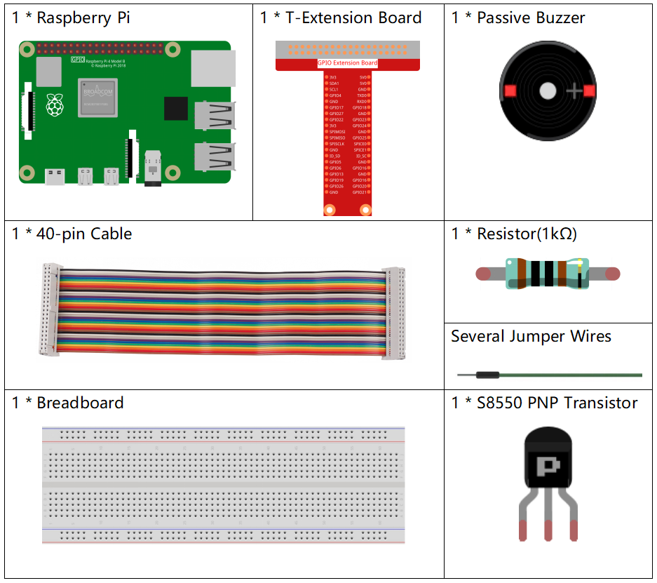

注釈
こんにちは、SunFounderのRaspberry Pi & Arduino & ESP32愛好家コミュニティへようこそ！Facebook上でRaspberry Pi、Arduino、ESP32についてもっと深く掘り下げ、他の愛好家と交流しましょう。
参加する理由は？
エキスパートサポート：コミュニティやチームの助けを借りて、販売後の問題や技術的な課題を解決します。
学び＆共有：ヒントやチュートリアルを交換してスキルを向上させましょう。
独占的なプレビュー：新製品の発表や先行プレビューに早期アクセスしましょう。
特別割引：最新製品の独占割引をお楽しみください。
祭りのプロモーションとギフト：ギフトや祝日のプロモーションに参加しましょう。
👉 私たちと一緒に探索し、創造する準備はできていますか？[ここ]をクリックして今すぐ参加しましょう！
1.2.2 パッシブブザー
前書き
このレッスンでは、パッシブブザーで音楽を再生する方法を学習する。
部品
回路図
この実験では、トランジスタを保護するために、トランジスタのベースとGPIOの間にパッシブブザー、PNPトランジスタ、および1k抵抗器を使用する。
GPIO17に異なる周波数が与えられると、パッシブブザーは異なる音を出す。このようにして、ブザーは音楽を再生する。

実験手順
ステップ1： 回路を作る。

C言語ユーザー向け
ステップ2： ディレクトリを変更する。
cd ~/davinci-kit-for-raspberry-pi/c/1.2.2/
ステップ3： コードをコンパイルする。
gcc 1.2.2_PassiveBuzzer.c -lwiringPi
ステップ4： 実行。
sudo ./a.out
コードが実行されると、ブザーが音楽を再生する。
コード
#include <wiringPi.h>
#include <softTone.h>
#include <stdio.h>
#define BuzPin 0
#define CL1 131
#define CL2 147
#define CL3 165
#define CL4 175
#define CL5 196
#define CL6 221
#define CL7 248
#define CM1 262
#define CM2 294
#define CM3 330
#define CM4 350
#define CM5 393
#define CM6 441
#define CM7 495
#define CH1 525
#define CH2 589
#define CH3 661
#define CH4 700
#define CH5 786
#define CH6 882
#define CH7 990
int song_1[] = {CM3,CM5,CM6,CM3,CM2,CM3,CM5,CM6,CH1,CM6,CM5,CM1,CM3,CM2,
CM2,CM3,CM5,CM2,CM3,CM3,CL6,CL6,CL6,CM1,CM2,CM3,CM2,CL7,
CL6,CM1,CL5};
int beat_1[] = {1,1,3,1,1,3,1,1,1,1,1,1,1,1,3,1,1,3,1,1,1,1,1,1,1,2,1,1,
1,1,1,1,1,1,3};
int song_2[] = {CM1,CM1,CM1,CL5,CM3,CM3,CM3,CM1,CM1,CM3,CM5,CM5,CM4,CM3,CM2,
CM2,CM3,CM4,CM4,CM3,CM2,CM3,CM1,CM1,CM3,CM2,CL5,CL7,CM2,CM1
};
int beat_2[] = {1,1,1,3,1,1,1,3,1,1,1,1,1,1,3,1,1,1,2,1,1,1,3,1,1,1,3,3,2,3};
int main(void)
{
int i, j;
if(wiringPiSetup() == -1){ //when initialize wiring failed,print message to screen
printf("setup wiringPi failed !");
return 1;
}
if(softToneCreate(BuzPin) == -1){
printf("setup softTone failed !");
return 1;
}
while(1){
printf("music is being played...\n");
delay(100);
for(i=0;i<sizeof(song_1)/4;i++){
softToneWrite(BuzPin, song_1[i]);
delay(beat_1[i] * 500);
}
for(i=0;i<sizeof(song_2)/4;i++){
softToneWrite(BuzPin, song_2[i]);
delay(beat_2[i] * 500);
}
}
return 0;
}
コードの説明
#define CL1 131
#define CL2 147
#define CL3 165
#define CL4 175
#define CL5 196
#define CL6 221
#define CL7 248
#define CM1 262
#define CM2 294
各音の周波数は以下のように示している。CL－低音、CM－中音、CH－高音、1～7は音C、D、E、F、G、A、Bに対応する。
int song_1[] = {CM3,CM5,CM6,CM3,CM2,CM3,CM5,CM6,CH1,CM6,CM5,CM1,CM3,CM2,
CM2,CM3,CM5,CM2,CM3,CM3,CL6,CL6,CL6,CM1,CM2,CM3,CM2,CL7,
CL6,CM1,CL5};
int beat_1[] = {1,1,3,1,1,3,1,1,1,1,1,1,1,1,3,1,1,3,1,1,1,1,1,1,1,2,1,1,
1,1,1,1,1,1,3};
配列 song_1[] は曲の楽譜を保存する。 beat_1[] は曲の各音符の拍を表す（1拍ごとに0.5秒）。
if(softToneCreate(BuzPin) == -1){
printf("setup softTone failed !");
return 1;
これにより、ソフトウェア制御のトーンピンが作成される。
任意のGPIOピンを使用でき、ピンの番号は使用した wiringPiSetup() 関数の番号になる。成功した場合の戻り値は0である。
それ以外の場合は、グローバル変数errnoをチェックして、何が問題なのかを確認する必要がある。
for(i=0;i<sizeof(song_1)/4;i++){
softToneWrite(BuzPin, song_1[i]);
delay(beat_1[i] * 500);
}
song_1 を再生するために for statement を使用する。
判断条件 i<sizeof(song_1)/4 では、 配列 song_1[] は整数のデータ型の配列であり、各要素は 4 ビートを取るため、4 で除算します。
song_1の要素の数（音符の数）は、 sizeof(song_4) を4で割ることによって得られる。
各音符を拍* 500msで再生できるようにするには、関数 delay(beat_1[i]*500) が呼び出される。
softToneWrite(BuzPin、song_1[i]) のプロトタイプ：
void softToneWrite (int pin, int freq);
これにより、指定されたピンのトーン周波数値が更新される。周波数を0に設定するまで、トーンの再生は停止しない。
Python言語ユーザー向け
ステップ2：ディレクトリを変更する。
cd ~/davinci-kit-for-raspberry-pi/python/
ステップ3：実行する。
sudo python3 1.2.2_PassiveBuzzer.py
コードが実行されると、ブザーが音楽を再生する。
コード
注釈
以下のコードを 変更/リセット/コピー/実行/停止 できます。 ただし、その前に、 davinci-kit-for-raspberry-pi/python のようなソースコードパスに移動する必要があります。
import RPi.GPIO as GPIO
import time
Buzzer = 11
CL = [0, 131, 147, 165, 175, 196, 211, 248] # Frequency of Bass tone in C major
CM = [0, 262, 294, 330, 350, 393, 441, 495] # Frequency of Midrange tone in C major
CH = [0, 525, 589, 661, 700, 786, 882, 990] # Frequency of Treble tone in C major
song_1 = [ CM[3], CM[5], CM[6], CM[3], CM[2], CM[3], CM[5], CM[6], # Notes of song1
CH[1], CM[6], CM[5], CM[1], CM[3], CM[2], CM[2], CM[3],
CM[5], CM[2], CM[3], CM[3], CL[6], CL[6], CL[6], CM[1],
CM[2], CM[3], CM[2], CL[7], CL[6], CM[1], CL[5] ]
beat_1 = [ 1, 1, 3, 1, 1, 3, 1, 1, # Beats of song 1, 1 means 1/8 beat
1, 1, 1, 1, 1, 1, 3, 1,
1, 3, 1, 1, 1, 1, 1, 1,
1, 2, 1, 1, 1, 1, 1, 1,
1, 1, 3 ]
song_2 = [ CM[1], CM[1], CM[1], CL[5], CM[3], CM[3], CM[3], CM[1], # Notes of song2
CM[1], CM[3], CM[5], CM[5], CM[4], CM[3], CM[2], CM[2],
CM[3], CM[4], CM[4], CM[3], CM[2], CM[3], CM[1], CM[1],
CM[3], CM[2], CL[5], CL[7], CM[2], CM[1] ]
beat_2 = [ 1, 1, 2, 2, 1, 1, 2, 2, # Beats of song 2, 1 means 1/8 beat
1, 1, 2, 2, 1, 1, 3, 1,
1, 2, 2, 1, 1, 2, 2, 1,
1, 2, 2, 1, 1, 3 ]
def setup():
GPIO.setmode(GPIO.BOARD) # Numbers GPIOs by physical location
GPIO.setup(Buzzer, GPIO.OUT) # Set pins' mode is output
global Buzz # Assign a global variable to replace GPIO.PWM
Buzz = GPIO.PWM(Buzzer, 440) # 440 is initial frequency.
Buzz.start(50) # Start Buzzer pin with 50% duty cycle
def loop():
while True:
print ('\n Playing song 1...')
for i in range(1, len(song_1)): # Play song 1
Buzz.ChangeFrequency(song_1[i]) # Change the frequency along the song note
time.sleep(beat_1[i] * 0.5) # delay a note for beat * 0.5s
time.sleep(1) # Wait a second for next song.
print ('\n\n Playing song 2...')
for i in range(1, len(song_2)): # Play song 1
Buzz.ChangeFrequency(song_2[i]) # Change the frequency along the song note
time.sleep(beat_2[i] * 0.5) # delay a note for beat * 0.5s
def destory():
Buzz.stop() # Stop the buzzer
GPIO.output(Buzzer, 1) # Set Buzzer pin to High
GPIO.cleanup() # Release resource
if __name__ == '__main__': # Program start from here
setup()
try:
loop()
except KeyboardInterrupt: # When 'Ctrl+C' is pressed, the program destroy() will be executed.
destory()
コードの説明
CL = [0, 131, 147, 165, 175, 196, 211, 248] # Frequency of Bass tone in C major
CM = [0, 262, 294, 330, 350, 393, 441, 495] # Frequency of Midrange tone in C major
CH = [0, 525, 589, 661, 700, 786, 882, 990] # Frequency of Treble tone in C major
これらは各音符の周波数である。番号1〜7が音色のCDEFGABに対応するように、最初の0は CL[0] をスキップする。
song_1 = [ CM[3], CM[5], CM[6], CM[3], CM[2], CM[3], CM[5], CM[6],
CH[1], CM[6], CM[5], CM[1], CM[3], CM[2], CM[2], CM[3],
CM[5], CM[2], CM[3], CM[3], CL[6], CL[6], CL[6], CM[1],
CM[2], CM[3], CM[2], CL[7], CL[6], CM[1], CL[5] ]
これらの配列は歌の音符である。
beat_1 = [ 1, 1, 3, 1, 1, 3, 1, 1, 1, 1, 1, 1, 1, 1, 3, 1,
1, 3, 1, 1, 1, 1, 1, 1, 1, 2, 1, 1, 1, 1, 1, 1,
1, 1, 3 ]
すべての音符の拍（各番号）は、⅛拍で、つまり0.5秒を表す。
Buzz = GPIO.PWM(Buzzer, 440)
Buzz.start(50)
ピンブザーをPWMピンとして定義し、その周波数を440に設定し、 Buzz.start(50) を使用してPWMを実行する。
さらに、デューティサイクルを50％に設定する。
for i in range(1, len(song_1)):
Buzz.ChangeFrequency(song_1[i])
time.sleep(beat_1[i] * 0.5)
for 文を実行すると、ブザーは配列 song_1[] の音符を beat_1[] 配列の拍で再生する。
これで、パッシブブザーが音楽を再生していることが聞こえる。
現象画像